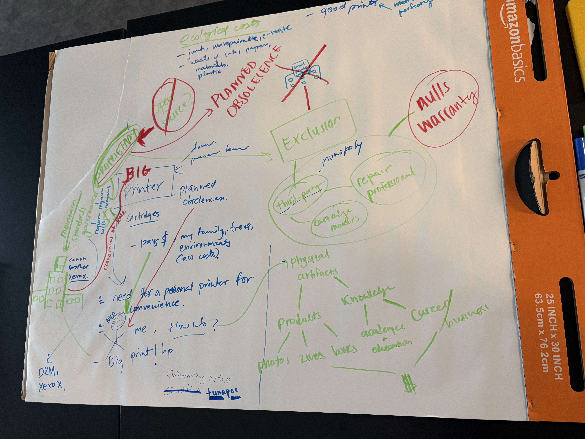
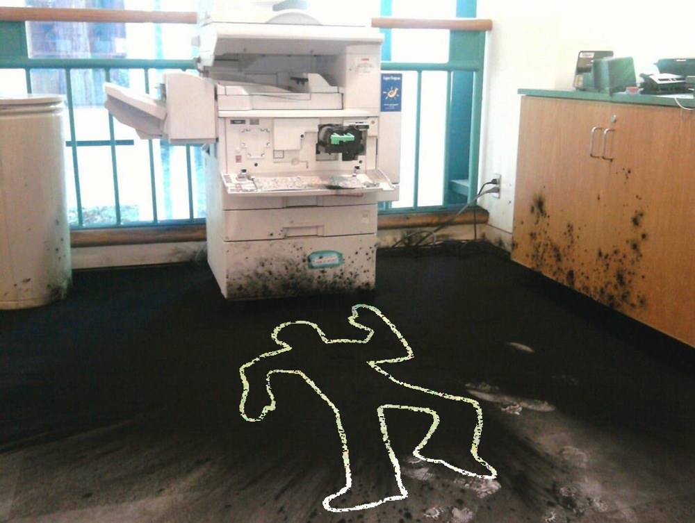

Notes
Critical Engineering: Uses design and critique as a transformative language to reveal how technological systems shape human behavior and thought.
Eccentric Engineering: Treats engineering as an argument or interdisciplinary art practice (combining social practice and systems art) to imagine alternative technological possibilities.
Homework
- READ: The Critical Engineering Manifesto - Julian Oliver, Gordan Savičić, Danja Vasiliev.
READ: Langdon Winner, “Do Artifacts Have Politics?”
READ (OPTIONAL): Dean Chahim, “Engineers Don’t Solve Problems” (Logic(s) Magazine, Issue 5: Failure, 2018) - WRITE and POST your responses to these readings. Consider how Winner’s ideas translate to the system of infrastructure you have chosen to think through in your class response. What designed characteristics in your system are normalized and therefore taken for granted? Who or what does it exclude or include?
- FIND a work or example of eccentric or critical engineering and make a post with an image, link and write a sentence or two describing its methods
Reading Notes
The Critical Engineering Manifesto - Julian Oliver, Gordan Savičić, Danja Vasiliev.
https://criticalengineering.org/ resonance
- treat the technologies we depend upon as objects of study, suspicion and intervention
- “2. The Critical Engineer raises awareness that with each technological advance our techno-political literacy is challenged.”
- “7. The Critical Engineer observes the space between the production and consumption of technology. Acting rapidly to changes in this space, the Critical Engineer serves to expose moments of imbalance and deception.”
- “10. The Critical Engineer considers the exploit to be the most desirable form of exposure.”
the critical design engineering manifesto (remixed) - “3. The Critical Design Engineer designs seams — not seamlessness — so the user can understand, configure, and contest.”
- “6. The Critical Design Engineer knows that ‘agent’ describes socio-technical dynamics involving models, parameters, tokens, reinforcement loops, protocols, products, networks, devices and bodies”
- “8. The Critical Design Engineer looks to the history of critical design, speculative design, adversarial design and their discontents, and carries their strategies out of the gallery and into the repository, where critique must survive contact with use.”
Langdon Winner, “Do Artifacts Have Politics?”
- tl;dr: technological artifacts are not politically neutral — they can embody, reinforce, or require specific arrangements of power and authority.
- pushback against pure instrumentalism, challenging “tools are neutral, only use matters”; “guns don’t kill people”, arguing that the design itself can constrain or enable specific social outcomes
- Artifacts can have politics in two distinct ways:
- Some technologies’ political effects come from how they’re deployed in a given social/economic setting (design choices that happen to serve certain groups’ interests)
- Others are “inherently political”—their technical requirements are strongly compatible with only one kind of social/political order, regardless of who’s using them or why
- “at issue is the claim that the machines, structures, and systems of modern material culture can be accurately judged not only for their contributions of efficiency and productivity, not merely for their positive and negative side effects, but also for the ways in which they can embody specific forms of power and authority.”
- “it is no surprise to learn that technical systems of various kinds are deeply interwoven in the conditions of modern politics. the physical arrangements of industrial production, warfare, communications, and the like have fundamentally changed the exercise of power and the experience of citizenship”
- “adaptation of human ends to technical means”
- Robert Moses, Long Island overpasses, Jones beach, limiting access of racial minorities and low-income groups who relied upon buses
- Mccormick pneumatic molding machines — “the new machines, manned by unskilled labor, actually produced inferior castings ast a higher cost than the earlier process. after three years of use the machines were, in fact, abandoned, but by that time they have served their purpose— the destruction of the union”
- the the story of these technical developments at the McCormic factory cannot be understood adequately outside the record of workers’ attempts to organize, police repression of the labor movement in Chicago during that period, and the events surrounding the bombing at Haymarket Square.” — CONTEXT
- But we usually do not stop to inquire whether a given device might have been designed and built in such a way that it produces a set of consequences logically and temporally prior to any of its professed uses. Robert Moses’s bridges, after all, were used to carry automobiles from one point to another; McCormick’s machines were used to make metal castings; both technologies, however, encompassed purposes far beyond their immediate use. If our moral and political language for evaluating technology includes only categories having to do with tools and uses, if it does not include attention to the meaning of the designs and arrangements of our artifacts, then we will be blinded to much that is intellectually and practically crucial.
- organized movement of handicapped people in US during 1970s — designs unsuited for the handicapped arose more from long-standing neglect than from anyone’s active intention
- “to recognize the political dimensions in the shapes of technology does not require that we look for conscious conspiracies or malicious intentions”
- “Rather, one must say that the technological deck has been stacked long in advance to favor certain certain social interests, and that some people were bound to receive a better hand than others.”
- mechanical tomato harvester - University of California
- “to accommodate the rough motion of these ‘factories in the field,’ agricultural researchers have bred new varieties of tomatoes that are hardier, sturdier, and less tasty”
- number of tomato farmers has substantially gone down
- lawsuit charges that university officials are spending tax monies on projects that benefit a handful of private interests to the detriment of farmworkers, small farmers, consumers, and rural California generally
- an ongoing social process in which scientific knowledge, technological invention, and corporate profit reinforce each other in deeply entrenched patterns that bear the unmistakable stamp of political and economic power
- the UoC student researchers didn’t intend to facilitate economic concentration in tomato industry
- two choices that can affect the relative distribution of power, authority, and privilege in a community
-
- are we going to adopt it? yes or no?
- the greatest latitude of choice exists here; the very first time a particular instrument, system or technique is introduced
-
- specific features in the design or arrangement of a technical system after the decision to go ahead with it has already been made
- technological innovations are similar to legislative acts or political foundings that establish a framework for public order that will endure over many generations
- the same careful attention one would give to the rules, roles, and relationships of politics must also be given to such things as the building of highways, the creation of television networks, and the tailoring of seemingly insignificant features on new machines
- “the issues that divide or unite people in solciety are settled not only in the institutions and practices of politics proper, but also, and less obviously, in tangible arrangements of steel and concrete, wires and transistors, nuts and bolts ” quotes
- in the processes by which structuring decisions are made, different people are differently situated and possess unequal degrees of power as well as unequal levels of awareness privilege hazard
- “if you accept nuclear power plants, you also accept a techno-scientific-industrial-military elite. without these people in charge, you could not have nuclear power.”
- “the issue has to do with ways in which choices about technology have important consequences for the form and equality of human associations”
- but can the internal politics of technology and the politics of the whole community be so easily separated?
- “the advocates of the further development of nuclear power seem to believe that they are working on a rather flexible technology whose adverse social effects can be fixed by changing the design parameters of reactors and nuclear waste disposal systems… i belive them to be dead wrong in that faith. yes, we may be able to manage some of the ‘risks’ to public health and safety that nuclear power brings. but as society adapts to the more dangerous and apparently indeilible features of nuclear power, what will be the long-range toll in human freedom?”
(OPTIONAL): Dean Chahim, “Engineers Don’t Solve Problems” (Logic(s) Magazine, Issue 5: Failure, 2018)
Reading Response
Consider how Winner’s ideas translate to the system of infrastructure you have chosen to think through in your class response. What designed characteristics in your system are normalized and therefore taken for granted? Who or what does it exclude or include?
- pushback against pure instrumentalism, challenging “tools are neutral, only use matters”; “guns don’t kill people”, arguing that the design itself can constrain or enable specific social outcomes
- Some technologies’ political effects come from how they’re deployed in a given social/economic setting (design choices that happen to serve certain groups’ interests)
- Others are “inherently political”—their technical requirements are strongly compatible with only one kind of social/political order, regardless of who’s using them or why
- the the story of these technical developments at the McCormic factory cannot be understood adequately outside the record of workers’ attempts to organize, police repression of the labor movement in Chicago during that period, and the events surrounding the bombing at Haymarket Square.” — CONTEXT
- “to recognize the political dimensions in the shapes of technology does not require that we look for conscious conspiracies or malicious intentions”
- “Rather, one must say that the technological deck has been stacked long in advance to favor certain certain social interests, and that some people were bound to receive a better hand than others.”
- “to accommodate the rough motion of these ‘factories in the field,’ agricultural researchers have bred new varieties of tomatoes that are hardier, sturdier, and less tasty”
- number of tomato farmers has substantially gone down
- lawsuit charges that university officials are spending tax monies on projects that benefit a handful of private interests to the detriment of farmworkers, small farmers, consumers, and rural California generally
- the UoC student researchers didn’t intend to facilitate economic concentration in tomato industry
-
- are we going to adopt it? yes or no?
- the greatest latitude of choice exists here; the very first time a particular instrument, system or technique is introduced
-
- specific features in the design or arrangement of a technical system after the decision to go ahead with it has already been made
- the same careful attention one would give to the rules, roles, and relationships of politics must also be given to such things as the building of highways, the creation of television networks, and the tailoring of seemingly insignificant features on new machines
- “the issues that divide or unite people in solciety are settled not only in the institutions and practices of politics proper, but also, and less obviously, in tangible arrangements of steel and concrete, wires and transistors, nuts and bolts ” quotes
Reading Response
Consider how Winner’s ideas translate to the system of infrastructure you have chosen to think through in your class response. What designed characteristics in your system are normalized and therefore taken for granted? Who or what does it exclude or include?
The system of infrastructure I have chosen are consumer home printers. In line with Winner’s ideas, I wonder if this piece of infrastructure is an artifact that has politics through its use or if it is inherently political.
What has been normalized:
- Proprietary/chipped ink cartridges that block third-party inks framed as “quality control”
- Replacing a printer rather than repairing it when it fails — planned obsolesence
- Assumed connectivity to wifi and a manufacturer account even for local, offline tasks
- Firmware updates that can remotely change what a printer will and won’t do after purchase
What has been taken for granted (background assumptions):
- Reliable home infrastructure— space, electricity, internet
- (Institutional) demand for physical paper documents
Who or what it excludes/includes:
- Low-income households for whom ink cost-per-page is non-trivial
- People without home wifi
- Right-to-repair advocates and independent repair shops excluded by firmware and necessity of proprietary parts— alternatives could void the warranty
The printer falls under Winner’s “politics through use”, as there are deliberate design choices that produce political effects, masked as technical necessity. There is a power imbalance between the manufacturer and the consumer though, with ongoing manufacturer control (who gets to own, repair, and afford the right to print), but it is not justifiable as nuclear power which Winner argues cannot function safely without centralized, hierarchical control. Printing doesn’t have such technical requirements, but manufacturer control has become so normalized and accepted that its hard to see that these are deliberate design choices.
FIND a work or example of eccentric or critical engineering and make a post with an image, link and write a sentence or two describing its methods
“For You Slots” by Justin Guo borrows the language of gambling addiction from slot machines to reimagine “doom scrolling” on your mobile device. This piece brings attention to the addictive user interface techniques used by Big Tech to keep us on our devices by making a new interface, satirical and critical, for using them.
https://www.instagram.com/p/DVwt_PNAfvC/
Assignment
Critical Annotation and Intervention Assignment (10%)
- You are to select one piece of infrastructure that you interact with daily — a router, a platform, a web protocol, a data center visible on a map, a water pipe, a tap. Trace your chosen infrastructure’s actual physical and administrative path: where does it originate and who or what does it flow onto, who maintains it, what standards govern it, who pays, who is excluded, what ecological costs it displaces, and what does it conceal? What does it do when it functions perfectly? What does this show us about its ideal operation?
- Identify when the infrastructure normally “disappears” – i.e., when it works so well no one notices it – and the moment it breaks down and suddenly becomes visible (a blackout, a breakage, a service outage, slowness). What does this reveal about the characteristics of its ideal operation? What political or economic decision is this breakdown moment actually revealing? Who bears the cost when it fails, and who bore the cost when it was built?
- Create an intervention that engages with this system exposing an invisible assumption within it or that suggests how it might behave differently. For example:
- Deliberately misuse it, or use it in the wrong way. Document your efforts.
- Design a counter-measuring device that tracks and displays a hidden dynamics, impacts or costs of the system
- A protocol or governance document — a fictional-but-plausible RFC, zoning amendment, or maintenance manual for an alternative version of the system, written with the same bureaucratic seriousness as the real thing
- A deliberately inefficient or “wrong” version of the system that restores something optimization erased
Create and annotate a diagram of your system with your findings from (1) and (2) along with some documentation or diagramming of your intervention for (3).
-
The device we chose is a consumer home printer.
-
Annotated diagram, made in collaboration with Nico:

3. Intervention Idea:
A printer that simply ejects all of the ink in its cartridges in an incomprehensible way onto a sheet of paper in a slow bleed, like splatters of paint after any sign of manufacturer-induced failure. Technically it’s printing…
But at the same time, I feel like this is further punishing the user. How to turn it into something that punishes the manufacturer?
